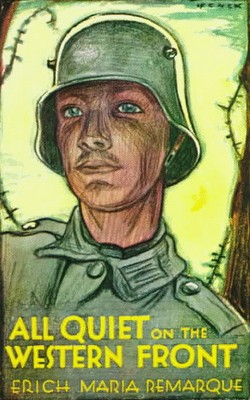
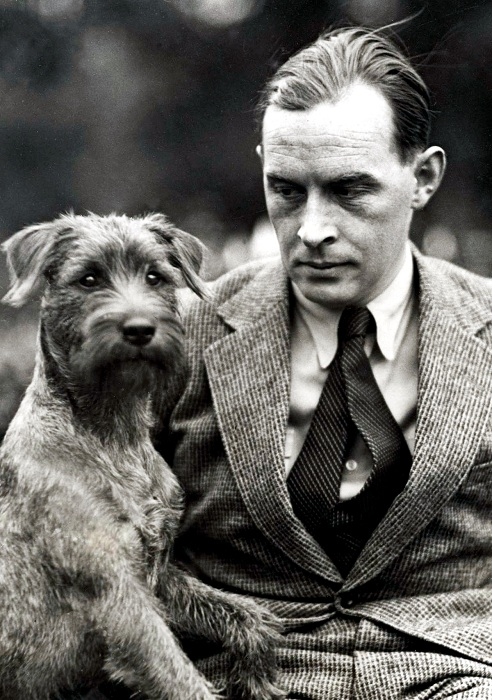
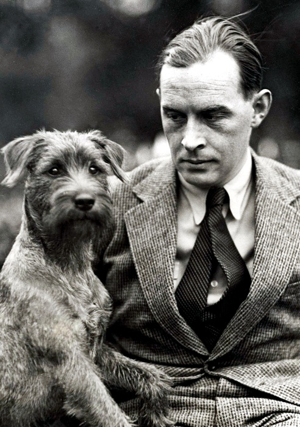

Erich Maria Remarque
"All Quiet on the Western Front"
short review:In 1914 a room full of German schoolboys, fresh-faced and idealistic,
are goaded by their schoolmaster to troop off to the ‘glorious war’. With the fire and patriotism of youth they sign up.
What follows is the moving story of a young ‘unknown soldier’ experiencing the horror and disillusionment of life in the trenches.

 
buy book on AMAZON

buy book on AMAZON
Popular quotes from book:
“We loved our country as much as they; we went courageously into every action; but also we distinguished the false from true, we had suddenly learned to see."
“For us lads of eighteen they ought to have been mediators and guides to the world of maturity, the world of work, of duty, of culture, of progress—to the future.”